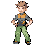

寶可夢 Wonderful
百科
繁中・非官方
原文
開始遊戲
首頁
指南
寶可夢
道具
招式
地圖
活動
道館與聯盟
系統
果園
經濟
公會
更新
常見問題
首頁
›
道館與聯盟
› 道館・小剛
小剛
Brock

徽章
灰色徽章（1/8）
屬性
岩石
地點
深灰道館
條件
無
獎勵
賞金 2,000（再戰 1,000）
王牌
Lv 27
建議最低等級
Lv 12+
隊伍
寶可夢
等級
完美個體值項數
招牌招式
攜帶
小拳石
24
1
-
-
獨角犀牛
25
1
-
-
大岩蛇
27
2
岩石封鎖
硬石頭
 小拳石
小拳石 獨角犀牛
獨角犀牛 大岩蛇
大岩蛇 硬石頭
硬石頭